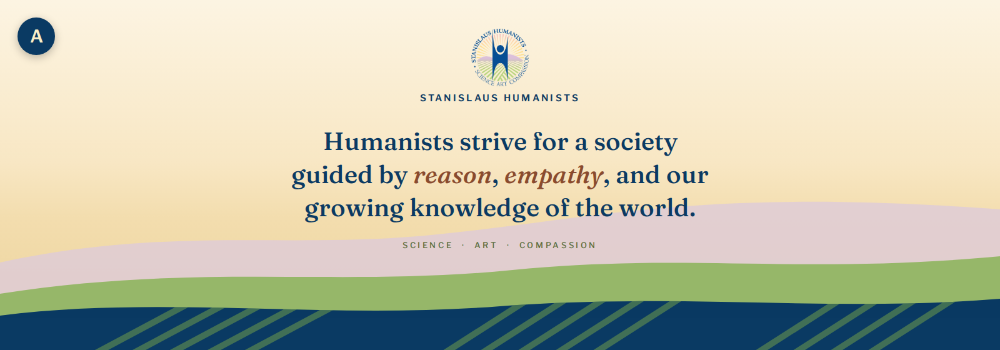
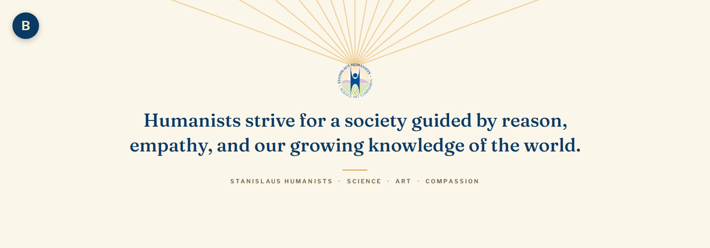
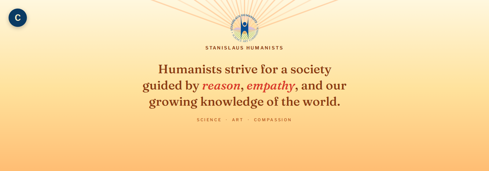
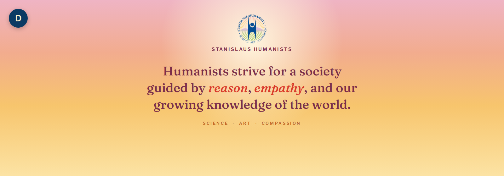
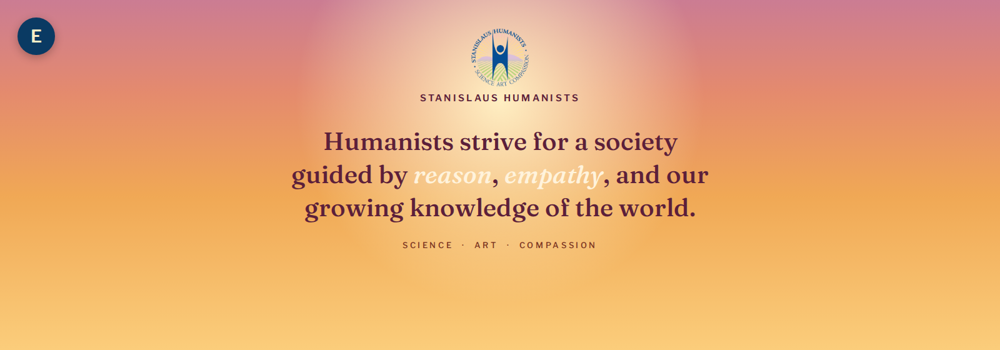
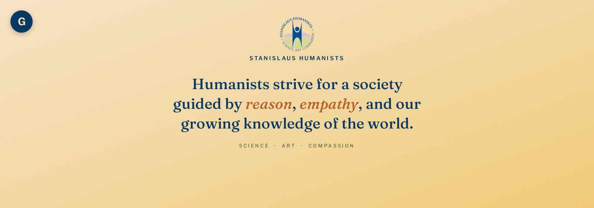
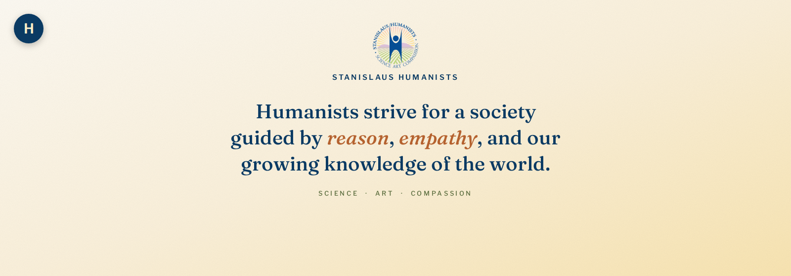

Header concept mockups
Eight copies of the stanislaus-humanists.org home page — banner on top, slim sticky nav below, real welcome copy — one per header concept. Open several at once in separate windows to compare; each page's title starts with its letter so the windows stay tellable apart in the taskbar.
Shared styling lives in mockup-assets/mockup.css; edit it once
and all eight pages pick up the change. Each mockup-X.html
differs only in its banner <img> and its label bar.
-

A — Vineyard Horizon
Warm cream-to-gold sky over layered hills echoing the logo's vineyard rows.
-

B — First Light
Minimal cream background, faint dawn rays fanning from behind the logo.
-

C — Citrus Sky
Warm gold-to-peach gradient with orange sunburst rays, no hills.
-

D — Dawn Sky
Soft pink-to-gold sunrise gradient with a glow behind the logo.
-

E — Rose Gold Dawn
Deeper rose-to-amber gradient; the cream accent text is low-contrast here.
-

F — Amber Blush
Gentlest golden-morning gradient — apricot to gold only.
-

G — Brand Gold (V2 style)
Medium gold diagonal gradient on the logo's sunburst gold, paper grain.
-

H — Brand Gold (V3 style)
Palest, airiest version of the same brand-gold gradient.